Why Markise
-
Three ways to write
Type into the rendered page, switch to the plain Markdown source, or keep both side by side with scrolling kept in step.
-
Your bytes, untouched
The file stays plain Markdown. Open a file and save it without edits, and it is written back byte for byte — line endings, spacing and odd syntax included.
-
Large files, first screen sooner
Files of 4 MiB and more open in two steps: the first part is shown while the rest loads in the background.
-
Local and private
No account and no telemetry. Update checks run only if you agree to them.
Write, read, or both at once
Headings, lists, task lists, tables, quotes, code and footnotes render as you type, following CommonMark and GitHub Flavored Markdown. Formatting shortcuts and Markdown typed by hand both work. Switch to the source, or open Side by Side to see the Markdown next to the result.
- Rendered view, Source Code Mode and Side by Side
- Find and replace, with regular expressions
- Outline of every heading, file tree of your folder
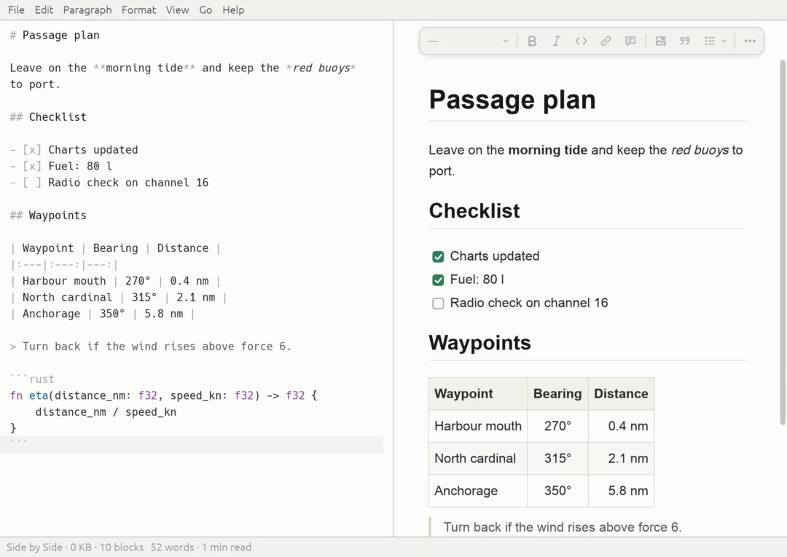
Your Obsidian vault. The same folder.
Open your existing vault without importing or converting it. Follow
[[wikilinks]] with Cmd/Ctrl-click, go Back and
Forward, and keep your .obsidian/ settings untouched: Markise reads a few
of them and never writes there.
- Links to notes and to headings, with
[[autocomplete - A link to a missing note offers to create it
- The folder is indexed in the background and kept up to date as files change
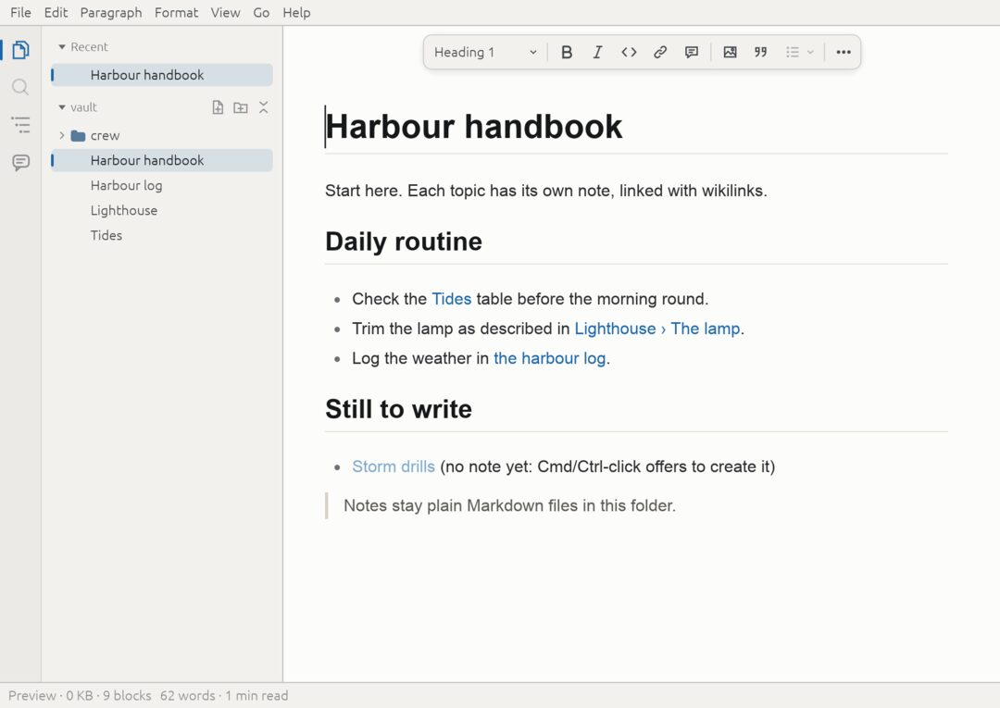
Large documents, a useful first screen sooner.
In recorded headless tests, 100 MiB documents reached their first painted frame in 41–52 ms, with full loading completed in 311–813 ms. You can read, scroll and type while the rest of the file loads.
- First painted frame, 100 MiB
- 41–52 ms
- Fully loaded, 100 MiB
- 311–813 ms
- Slowest frame while loading
- 1.2–2.4 ms
Measured on 3 November 2026 on an Apple M-series Mac with a release build, headless through the real app, on 100 MiB mixed, prose and log test documents. The times exclude the operating system's window, GPU and compositor latency, so on screen they are longer; other machines differ. Method and full table: ADR 0017; what changes while a file loads: Large files.
Write, illustrate, review, export.
Format text, edit tables, render TeX math and Mermaid flowcharts and sequence diagrams, and review comments and suggested changes stored in the text itself. Export HTML, PDF or PNG; Word, OpenDocument, EPUB, LaTeX and other formats use a separately installed Pandoc.
- Math and diagrams redraw as you edit them
- Export runs in the background, with progress and Cancel
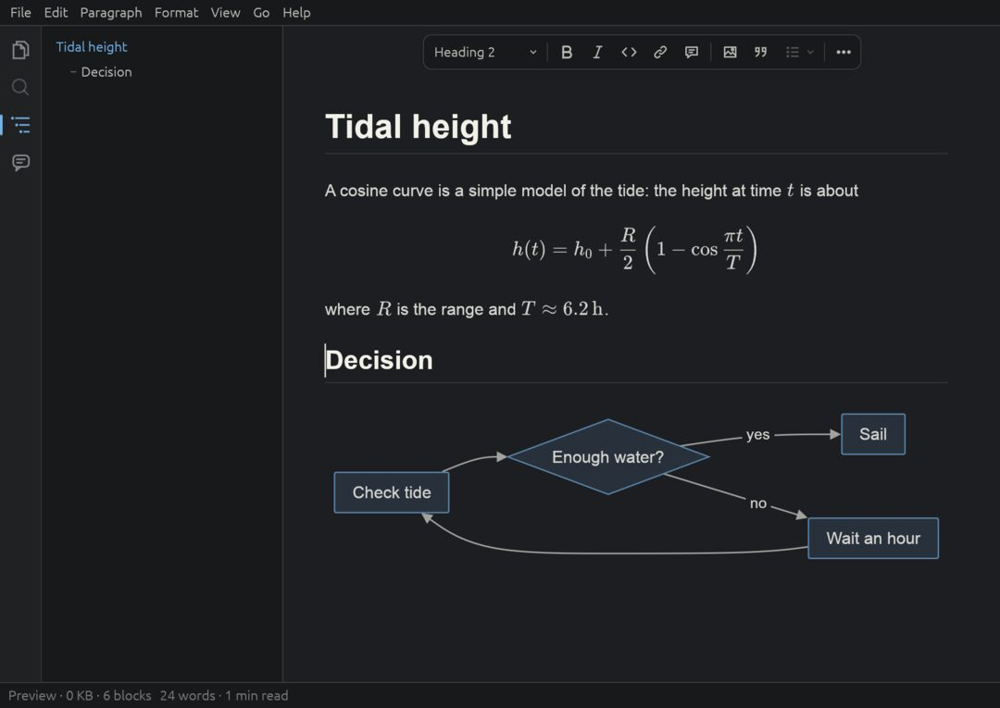
Review changes where you write
Comments and suggested insertions, deletions and replacements use the plain-text CriticMarkup syntax, so they survive any tool. Markise shows them as margin cards, you accept or reject each suggestion, and Save Copy Without Comments writes a clean version.
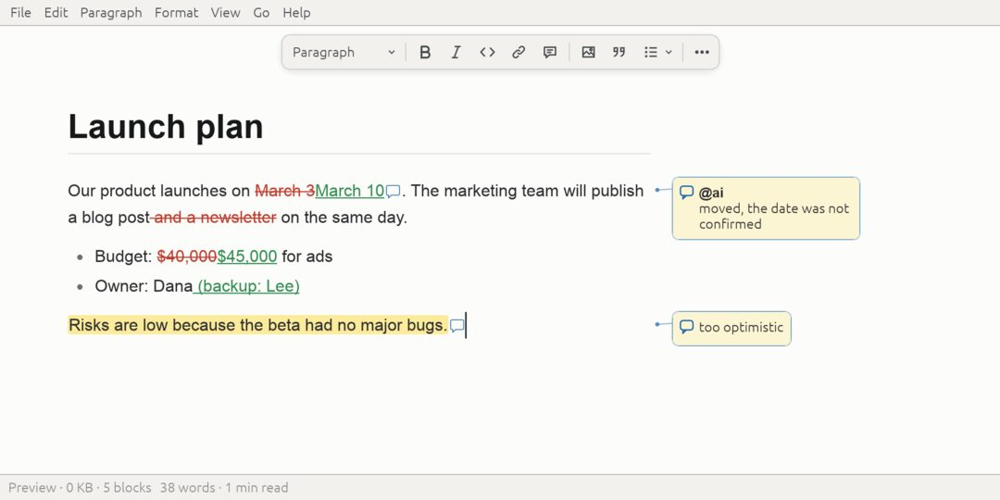
Choose your typography and colours
Combine a style with a colour scheme — Catppuccin, Dracula, Gruvbox, Nord, Rosé Pine, Tokyo Night, Markise Night and more — follow the system appearance, or import community CSS themes. Markise supports a subset of CSS; the Theme Report lists the rules it could not apply.
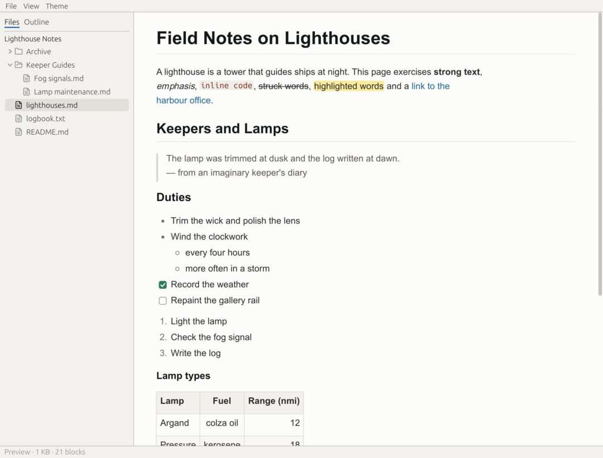
Markise (default) 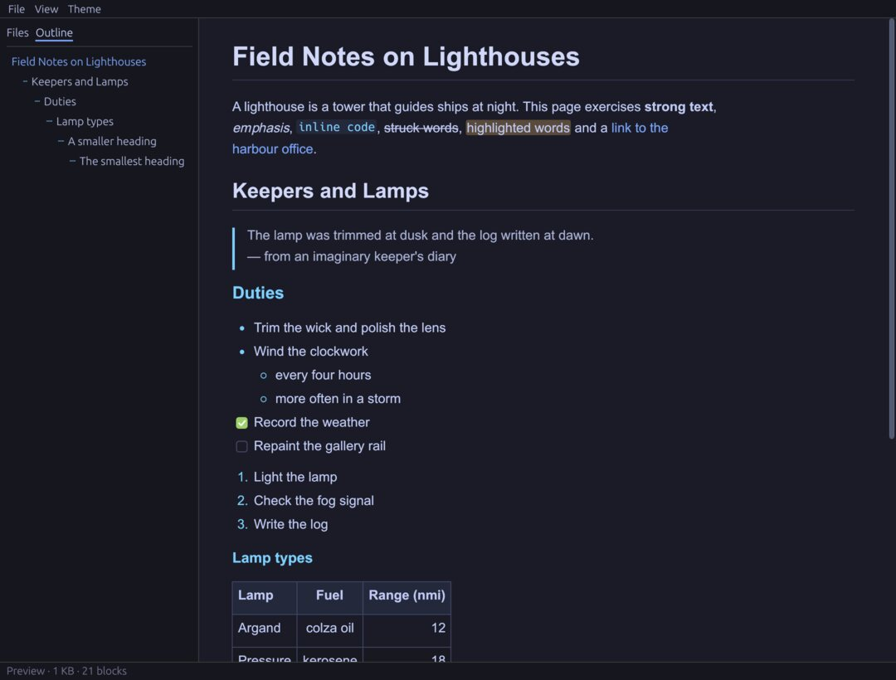
Tokyo Night 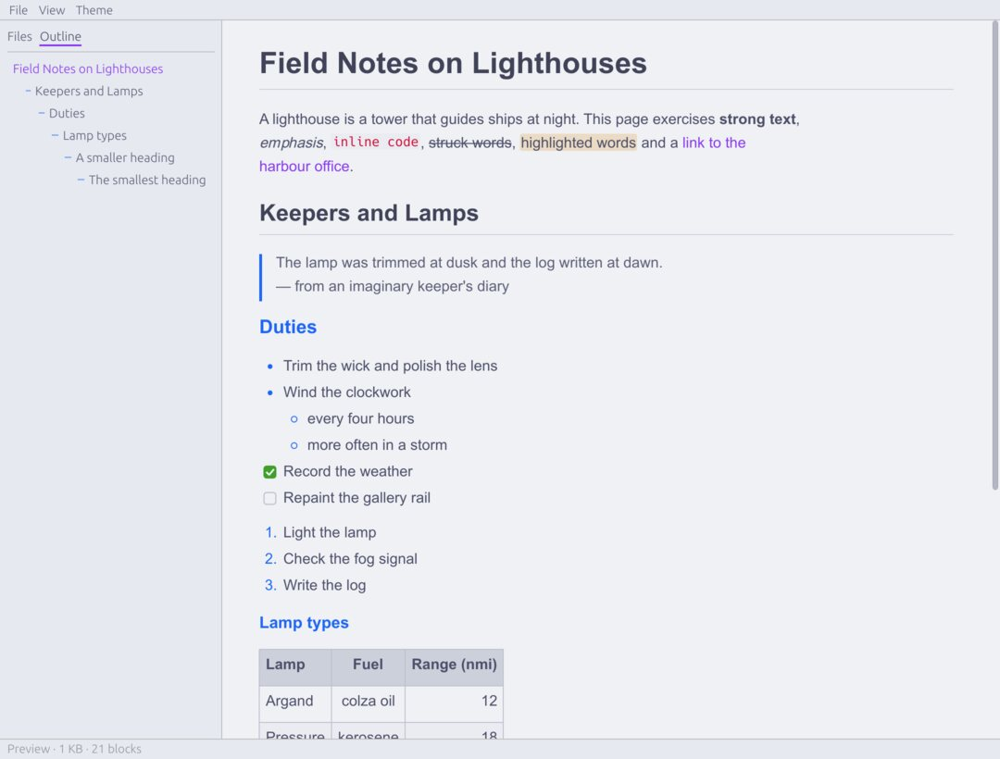
Catppuccin Latte 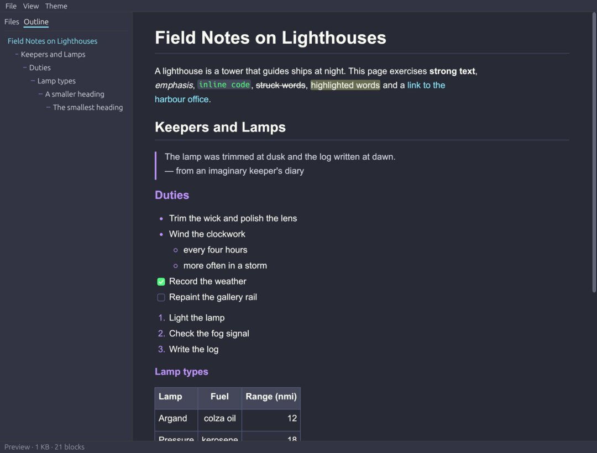
Dracula 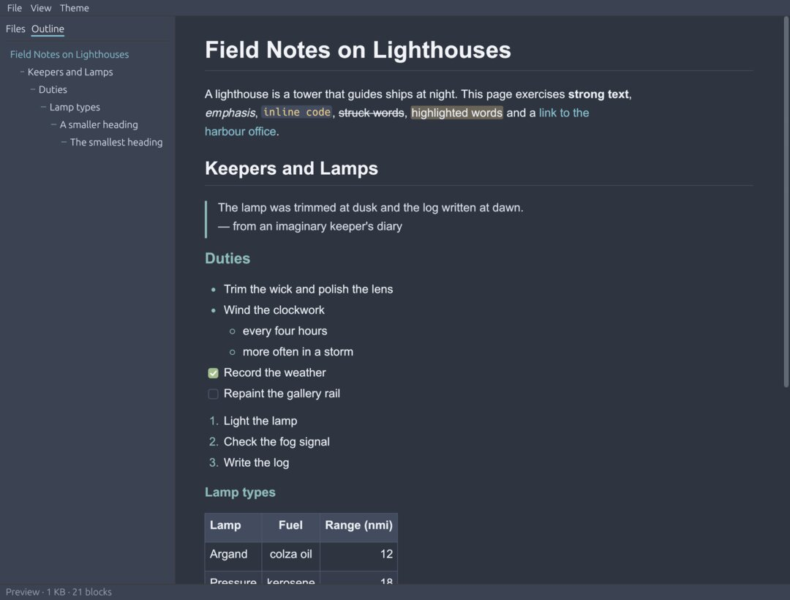
Nord 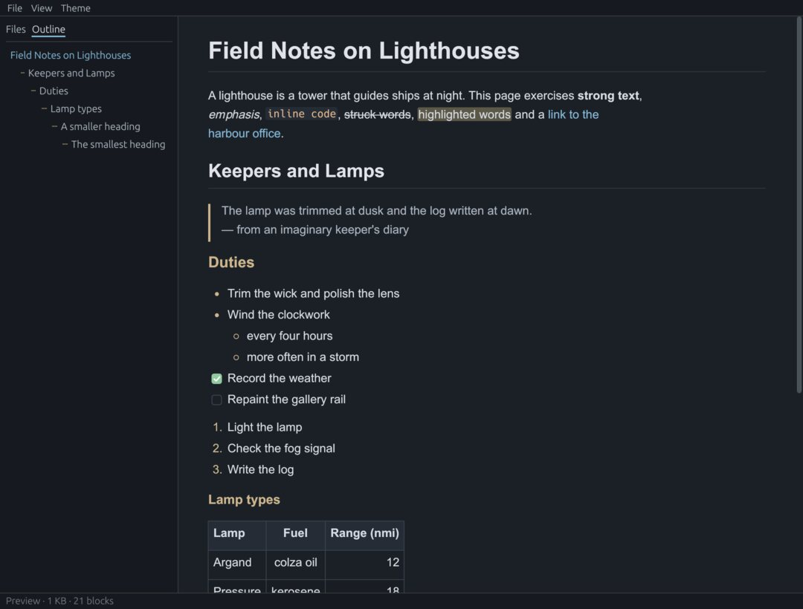
Markise Night 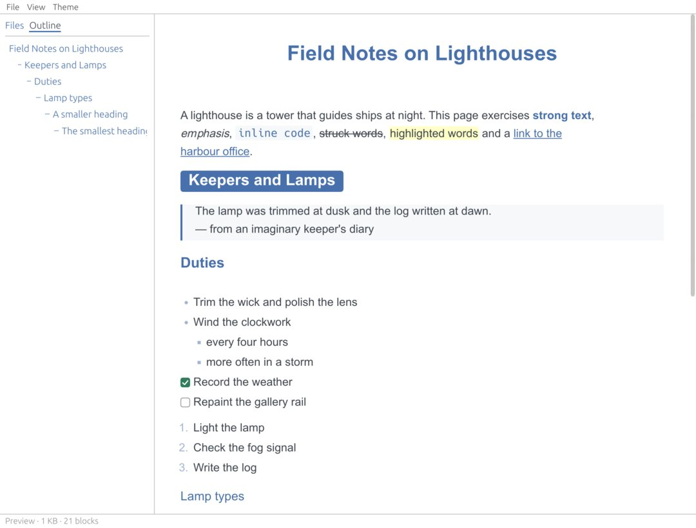
Lapis (bundled community theme) 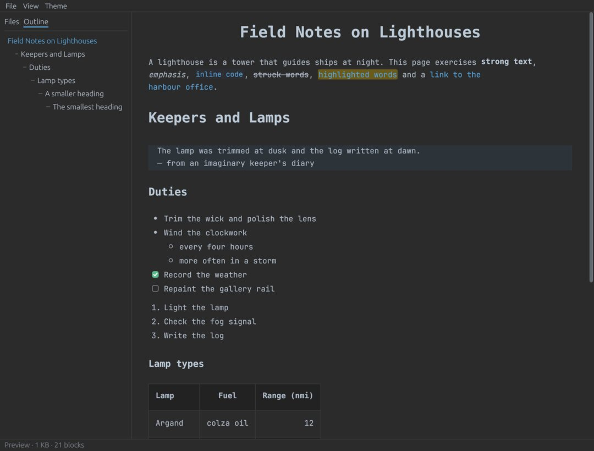
Drake (bundled community theme)
Theme compatibility means Markise applies the CSS features it supports; an imported theme can look different than in other editors. Themes in the guide
Local files. Optional update checks.
Your documents stay on your disk. Markise has no telemetry and no account. Automatic update checks stay off until you agree to them on first launch, and you can check manually from the menu at any time. A check asks GitHub for the latest releases, so GitHub sees your IP address and the app version. Markise never downloads or installs an update by itself.
Try the first beta
Beta builds are being prepared. The downloads open here once version 0.1.0-beta.1 is published on the GitHub releases page. The builds are not code-signed yet: the installation guide shows the extra step on first launch. Please report rough edges.
- macOSNot published yet
- WindowsNot published yet
- LinuxNot published yet
GitHub releases Installation guide
Available in the beta
- Rendered, source and Side by Side editing with undo, find and replace
- Folders and Obsidian vaults: file tree, Quick Open, wikilinks, Back and Forward
- Tables, task lists, code highlighting, TeX math, Mermaid diagrams
- Comments and suggestions (CriticMarkup)
- Styles, colour schemes and CSS theme import
- Export to HTML, PDF and PNG, and other formats via Pandoc
- Draft backups and recovery after a crash; optional autosave
Known limitations
- Builds are not code-signed or notarized
- One document per window; no tabs and no search across a folder
- PDF and PNG export show math and diagrams as source text
- Of the Mermaid diagram types, only flowcharts and sequence diagrams are drawn
- Updates are never installed automatically
- Linux: a tarball only